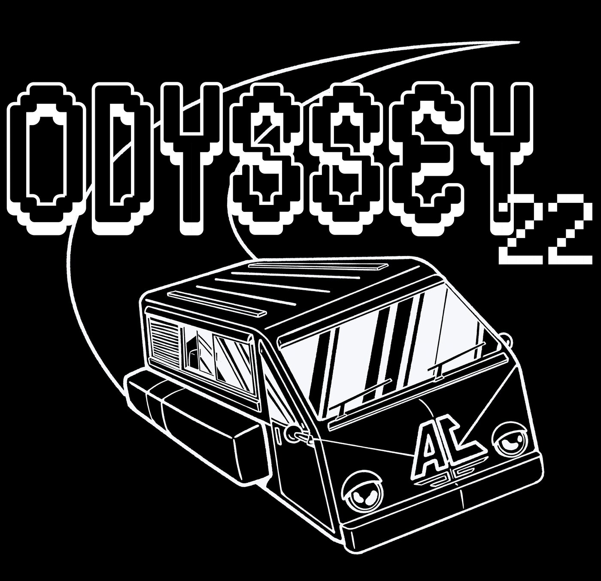
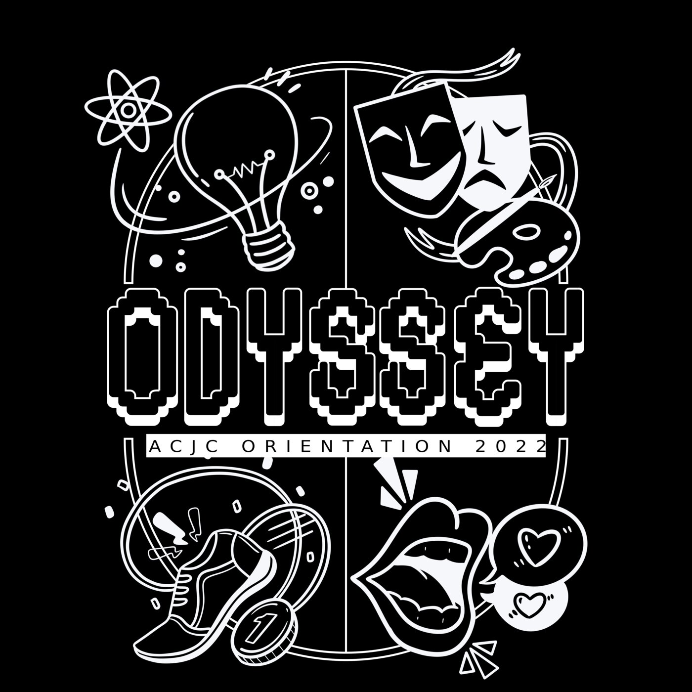
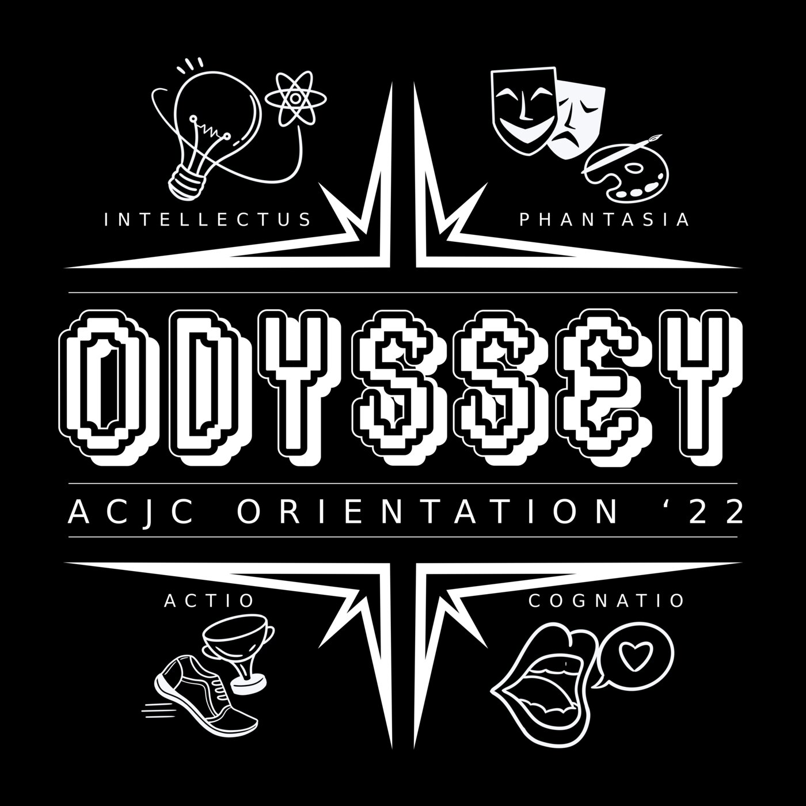
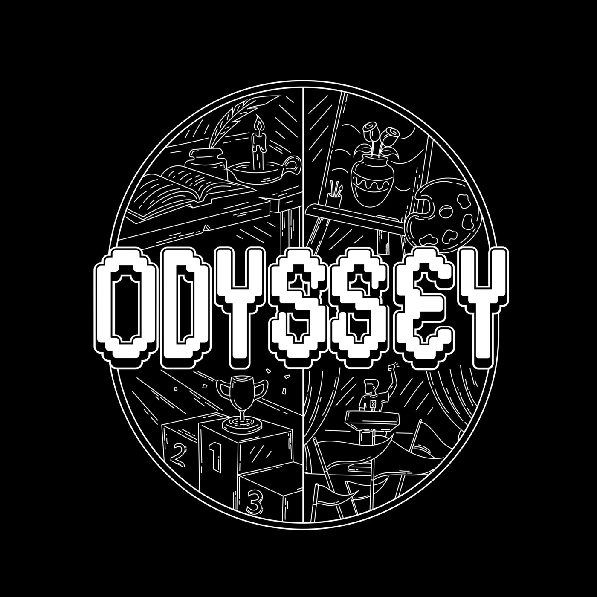

ACJC Orientation
As an Orientation Group Leader and a member of the camp media committee, I designed the incoming JC1 cohort's orientation T-shirt and accompanying publicity material. I've included drafts here as documentation.




Process work for the orientation shirt and publicity set — motif studies, icon work, and artboard drafts.
NUS Cali
For this commision, I designed the event shirt motif for a collaboration meet between the calisthenics clubs of NUS, NTU, and SIT, with their three animal mascots worked into a single circular emblem.
NUS SOC FOW
For this assignment, I designed around the theme of Greek Gods for the NUS School of Computing Freshman Orientation Week. I came up with motifs and colour palettes for the 4 gods representing the camp's houses, as well as the overall logo and other publicity materials.
Freshman Orientation Week branding for NUS School of Computing — event identity and a four-house sub-brand system.
Community & Runs
As a run club, we held regular meets for short 4-5km runs, after which we usually had dinner to interact with our members.
Collaborations
We collaborated with a host of other groups, from other run clubs in the space, to F&B outlets like cafes and bakeries. This helped us grow our community and expand our reach, as well as learn from other groups on how to grow our brand.
Merchandise
Designed the club's sticker and small-merch line. I've included the different drafts in my documentation.
The club's apparel line, with the logo, motif, and print placement worked out across a tank top.
A visual identity refresh for the club — logo lockups, artboard studies, and the emblem that later got 3D-printed.
A 3D-printed ER1 emblem piece — drag to rotate, scroll/pinch to zoom.
Process clips from the rebrand.
Publicity
One of our first personalised piece of physical media. We brought our billboard with us to all our events and meets.
Content and graphics for the club's social channels.
NUS IDEATE 2026 — Makeathon Prototype
As the team's only engineering member, I turned our early-stage idea into a physical, testable prototype: an assistive device that helps wheelchair users rise to a semi-standing position. I mainly handled the CAD modelling and printing, and also helped with the interviewing process and the final video submission.
- Led 3D modelling and 3D printing of multiple prototype iterations
- Contributed heavily to brainstorming, ideation, user interviews, and rapid concept testing
- Helped in the filming and editing of the team's competition video submission
Interactive model, exported from the actual CAD assembly — drag to rotate, scroll/pinch to zoom.
Our team's full competition submission video — pitch, prototype demo, and testing.
AEGIS — Peel-Off Boot Protectant
In this university module, we were tasked to conduct a full product design cycle from field research to physical prototype. We interviewed hikers, ran affinity clustering on the transcripts, and landed on a problem most people undersold in interviews but clearly resented: how troublesome it was to clean mud and dirt off boots after a hike. AEGIS is a sprayable liquid that dries into a thin biodegradable film over boots and shoes; after the hike, it peels off in one go, taking the accumulated dirt with it.
- Conducted hiker interviews and synthesised findings into a Jobs-To-Be-Done framework and persona
- Identified the target problem through affinity clustering, not the loudest complaint but the one interviewees consistently avoided dealing with
- Designed the spray canister prototype
The 3D-printed canister prototype — drag to rotate, scroll/pinch to zoom.
The full midterm presentation — created fully on Microsoft PowerPoint.
Autonomous Moon Rescue Rover
In this module, we were tasked to design a 'Moon Rover' sent on a rescue mission. We had to control our rover (which we christened "Clanker-Mobile") blindly through a simulated 'Moon-Base', relying only on the robot's LIDAR and RGB colour sensor. It was also equipped with an intentionally low-resolution black-and-white camera, a servo-controlled claw attachment, and an Arduino Uno to control all its components. The robot needed to identify colour-coded 'Medpak' zones, pick up the Medpak, and deliver it to an astronaut somewhere in the test area. At the end, we also had to make a sketch of what we thought the test area looked like, based on what our LIDAR could map.
I've highlighted some special features below:
- Data visualisation varied vastly from group to group, but our unique set-up allowed us to be one of the only groups that was able to complete all objectives within the time limit. We had a live LIDAR feed on the left that gave us feedback of the robot's immediate surroundings, a legacy mapping viewport in the middle that showed the robot's route through the area as well as obstacles that the LIDAR had detected as 'permanent', and a final experimental map on the right that tried to predict where the 'walls' would be placed so we could draw a more accurate sketch.
- The camera was a tough bottleneck to design around: with limited shots, horrible resolution, and poor contrast on the shots, it barely served its function to help us confirm our targets. Specifically, we needed the camera to confirm that our claw was in position to securely grab the Medpak. To solve this, I painted the claw white and gave it a black outline, boosting its contrast to the environment significantly. Then, I added a single black line in the middle of each claw piece. This was to augment the camera's depth perception: if the Medpak's tip was 'beyond' the black line, it was out of reach, whereas if it was 'behind' the line, it was within range of our claw.
- With the camera's main use being to confirm our claw's grabs, we needed the claw to be inside the FOV of the camera. However, as we inevitably rotated and moved the claw, sometimes it would simply move out of frame. Moving the camera backwards for a wider FOV just hurt our resolution, and we realised we needed a workaround. I built a system that revolutionised our robot: by mounting our camera high on a freely-rotating axle, I could hook this axle up to a chain-rotation system (similar to a bicycle's gears) that linked the rotation of the claw's base to the camera itself. This effectively 'trained' the camera on the claw itself, and allowed us to keep it in view at all times.
Payload-Launching Vehicle
For this module, we had to build a robot that would cross a few obstacles, stop before a wall (using a LIDAR sensor), and get a ping-pong ball over the wall before moving back to its start point. Points were awarded for each aspect of the course completed, as well as for being the lightest robot in the lab.
The launcher model — drag to rotate, scroll/pinch to zoom.
Graded-run footage.
Build/test clip.
I've highlighted some special features below:
- Our group was ambitious enough to attain the lightest-weighing robot in the lab. We did this by directly wiring our circuits (without a breadboard), using only 2 motors, and even using hot glue to fashion a battery case that weighed much less than cardboard.
- We were the only group who opted for a launching barrel mechanism shown above. Most other groups used a double-jointed servo arm that pivoted like a catapult to drop the ball over the wall. We tried a more unorthodox method and ultimately made it work.
Higher Art Papers
Coursework pieces, studies, and drafts from Higher Art at Nan Hua High School.
Final Paper 2 examination piece for Higher Art at Nan Hua High School.
ECR/ECN System Redesign
During my internship, I was tasked to improve the company's ECR/ECN system. Up to this point, it had been manually maintained on an Excel spreadsheet, with ID numbers being typed in by hand and entire paragraphs of documentation crammed into singular Excel cells. I took steps to improve the system:
- Mapped pain points in the legacy paper/Excel workflow through conversations and interviews with users, and translated them into system requirements
- Utilised my learnings to construct the new system architecture: Power Apps canvas app, a 12-table Dataverse schema, and 9 Power Automate flows for approvals and notifications
- Since company policy required handwritten signatures, I included handwritten pen-input signature capture into the form
- Redefined ECNs as immutable submitted records (rather than editable living documents), with follow-ups handled as new, linked ECNs.
New Engineering Change Request
Recreated concept UI illustrating the design. All names, IDs, and details shown are fictitious.
Before
After
Waterworld Attraction
Focused on the reopening of the Water World attraction, with additional attachments during ride repairs and maintenance — gaining hands-on exposure to the park's protocols, ride operating systems and networks, and mechanical systems.
General Park Workflows
More generally, I tagged along with other senior engineers to understand more about the park's operations and workflows. This included walkthroughs of the rides, maintenance checks, downtime calls, and team meetings.
Centipede
This was my first experience with Nomadsculpt. I experimented with making centipede segments that I could attach together later on
Drag to rotate, scroll/pinch to zoom — double-click and hold to grab it.
Armour Leggings
A wearable leg armour plate set.
Drag to rotate, scroll/pinch to zoom — double-click and hold to grab it.
Flute
Model of a Flute. This was my first experimentation with Autocad Fusion360.
Drag to rotate, scroll/pinch to zoom — double-click and hold to grab it.
Buzz
This project includes plenty of special play features. The bendable skeleton inside allows for poseable arms and fingers, the sunglasses and lifeguard's whistle are removeable, and best of all, the lifeguard's buoy zips back into his hand via an elastic cord when stretched.
Hangyodon Bouquet
I commissioned this for a friend's anniversary. It includes custom-made flowers and a figurine of Hangyodon from Sanrio.
Hangyodon Fuggler
I wanted a new bag charm, and was inspired by the style of a new wave of plushies that were on the markey knowns as Fugglers. I decided to copy that style over to Sanrio's Hangyodon, seeing as nothing like it existed on the market yet. I replicated the large open mouth and teeth, as well as the bulging, heavily-lidded eyes.
King Dedede
This is my favourite project. I planned and hand-crafted this amigurumi from scratch. A world of care went into the details on this model, especially his obi, robe, and hammer. I later made another version based on King Dedede's green skin variation from Super Smash Brothers, where his obi sports motifs of Waddledees instead of the standard triangular pattern. I also made another model of his rocket hammer, and different accessories.
Quackbox
I made this blindbox-style present for a friend's birthday. The packaging was custom-made to suit the 6 crochet duckling models I included.
SituationStitch
This was a crochet bouquet shop that I kept operational online for a short time. It was one of my first attempts at a startup, and I learnt a lot from the experience.
Weezing
I tried free-handing a Pokemon and made multiple versions of it, including giving a a Sitrus Berry from the game series.
Miscellaneous
Here are some miscellaneous projects:
Standard Chartered Marathon
Finished the Standard Chartered Marathon two years running, alongside co-founding and running Endurance Run 1.This was a 2-year-long journey for me. In the first year, I surprised myself by running under 5 hours for my first marathon. On an unforgiving, upsloping route, I pulled off a great first timing on my own. In my second year, I ran in the role of a more experienced runner, joining and pacing with my friends who were relatively new to long-distance running. Despite my slower timing, I crossed the line alongside my friends, and that was all that mattered in the second year.
Unicycling
This is a niche ongoing hobby of mine. I am slowly improving my range and distance, and although there are still many things to master (I still cant change direction), I intend to get there eventually.
Cassette Tape
A mixtape cover and sleeve I designed for my own personal custom cassette tape. I love older analogue forms of music media (I own a vinyl player as well), so this is something I was excited to commission.
Matcha & Coffee Concept
Original mascot character illustrations, drawn as a matcha latte and an iced coffee and incorporating the rubber hose artstyle.
Tide Drinking Bottle
A parody Tide detergent bottle label, done as a packaging design exercise.